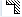
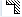

Parameter | Beschreibung | Einheit |
|---|
T | Werkzeugname | |
D | Schneidennummer | |
F | Vorschub | mm/U |
S / V 
| Spindeldrehzahl oder konstante Schnittgeschwindigkeit | U/min
m/min |
Spindel M-Funktion | Spindeldrehrichtung (nur wenn ShopTurn nicht aktiv) | |
Bearbeitung | ∇ (Schruppen) ∇∇∇ (Schlichten)
| |
Lage | Lage der Bearbeitung      | |
Bearbeitungs- richtung | | |
X0 | Bezugspunkt ∅ (abs) | mm |
Z0 | Bezugspunkt (abs) | mm |
X1 | Endpunkt X ∅ (abs) oder Endpunkt X bezogen auf X0 (ink) | mm |
Z1 | Endpunkt Z (abs) oder Endpunkt Z bezogen auf X0 (ink) | mm |
FS1...FS3 oder R1...R3 | Fasenbreite (FS1...FS3) oder Verrundungsradius (R1...R3) | mm |
XF2 | Freistich (alternativ zu FS2 oder R2) | mm |
D | Zustelltiefe (ink) – (nur beim Schruppen) | mm |
UX | Schlichtaufmaß in X-Richtung (ink) – (nur beim Schruppen) | mm |
UZ | Schlichtaufmaß in Z-Richtung (ink) – (nur beim Schruppen) | mm |
Siehe auch:
Abspanen
Aufruf des Zyklus - Abspanen in JOG